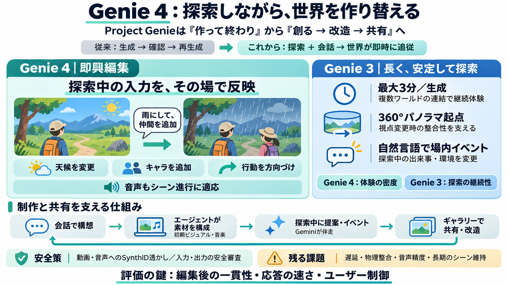

Genie 4: A new generation of world simulation — Google DeepMind
To maintain transparency, all video and audio generated by Genie 4 will include SynthID, our imperceptible digital water…

Project Genieが「作って終わり」から「探索しながら作り替え」へ進化し、セッション中に天候・キャラ・行動をリアルタイム反映します。
従来の生成は、基本的に「出力してから次を作る」形になりがちで、ユーザーは探索の途中で世界を根本から作り替えにくい状況でした。
Genie 4では、ワールドをナビゲートしている最中に別プロンプトを入れると、環境がリアルタイムに変化します（天候・キャラクター・行動の方向など）。
Genie 4は、シーンの進行に応じて「リアルタイムのネイティブ音声」が適応すると説明されています（環境音から会話まで）。
記事ベースの整理では、Genie 4は対話的な編集＋リアルタイム音声、Genie 3は長めの探索と空間整合を主軸にしています。
Genie 3は「1生成あたり最大3分」、さらにワールドチェaining（world chaining）で複数ワールドをつなげる方向の強化が挙げられています。
Genie 3は360度パノラマ画像を起点にし、視点を変えても一貫性を保つ「グラウンディング（grounding）」を狙うと説明されています。
Genie 3では、探索中に自然言語で環境を動的変更する「in-world events」が強化として挙げられています。
Project Genie agentは、単発プロンプトだけでなく会話のような自然言語でビジョンを説明し、マルチモーダルモデルをオーケストレーションして初期ビジュアルや背景スコア（ムードに合わせた音楽）を作る方向性です。
探索中にGeminiモデルを組み込み、画面状況を観察して次に行く場所の提案チップを出したり、自動でイベントを起動したりできるとされています。
キュレーションされたワールドとコミュニティ作品を集めるギャラリーにより、他者が探索・リミックスでき、制作→拡張の循環が強まります。
生成動画・音声へのSynthIDウォーターマーキングや、入力・出力の安全スクリーニングが言及されています。研究段階でも安全策を組み込もうとする姿勢です。
カメラ遅延、複雑な物理相互作用の精緻さ、リアルタイム音声精度、長期のシーン永続性などが研究として進行中の課題とされています。
Genie 4は探索中のリアルタイム編集と音声適応で体験密度を引き上げ、Genie 3は長時間・360°起点で整合性の安定を狙います。エージェントとギャラリーが循環を作る一方、安全と限界の透明性が今後の評価軸になります。
To maintain transparency, all video and audio generated by Genie 4 will include SynthID, our imperceptible digital water…
Google says Genie 4 output includes SynthID watermarking for generated video and audio. That can help indicate synthetic…
The company has also emphasised responsible deployment. Genie 4 includes safety guardrails, and generated video and audi…
# Google AI on X: "Genie 4 includes strict safety guardrails, and all generated audio and video is watermarked with Syn……
Yes. Google says all video and audio generated by Genie 4 will carry SynthID, its imperceptible watermark. R For this r…